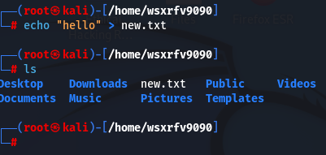

Linux terminal commands:
passwd: change password
control+shift+=: Enlarge the terminal
control+-: Minimize the terminal
pwd: Print Working Directory

cd: Change Directory

use tab, the terminal will show you where you can go

make directory:
mkdir
remove directory:
rmdir new (for ex)

show all the file names in the current directory:
ls -la
copy, remove, move:

copy: cp

remove: rm

move: mv

update database: updatedb
is a command that we use commonly for command like locate to work.
locate files


because when you first make this file, it doesn't add up to the database, so you have to update it in
order for the terminal to find it.
manual: man
it will look up the command.

route
shows routing table

view history command

search for spesific syntax

git clone (github http)